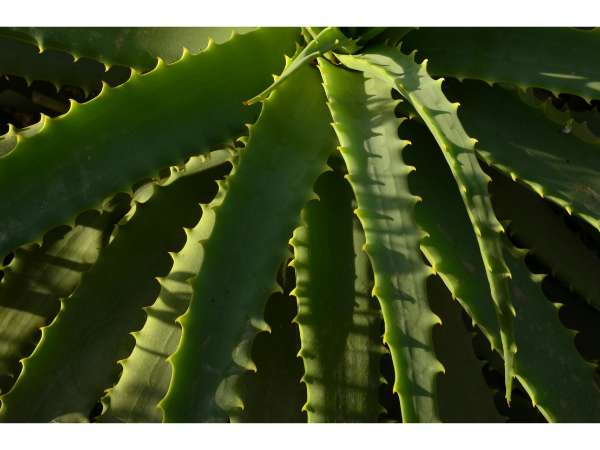

Aloe × spinosissima
Common Names: Spider Aloe, Spiny Aloe
Local Name: Kathalai (Tamil), Ghritkumari (Hindi)
Family: Asphodelaceae
Origin: Hybrid origin (Aloe arborescens × Aloe humilis)
Plant Type: Succulent perennial; hybrid aloe
Average Lifespan: Many years; clump-forming
| Growth Habit | Compact rosette-forming succulent; produces offsets to form clumps |
| Plant Size | 30–60 cm tall; spreads to 60–90 cm in clumps |
| Leaves | Narrow, lance-shaped, grey-green with white spots and spiny margins; densely arranged in rosette |
| Flowers | Tubular, orange-red, borne on tall branched spikes; very attractive to sunbirds and bees |
| Flower Characteristics | Blooms in winter to spring; long-lasting flower spikes; excellent nectar source |
| Root System | Shallow, fibrous succulent roots; drought-resistant |
| Climate | Tropical to subtropical; drought-tolerant |
| Temperature Range | 10–40°C; tolerates mild frost |
| Soil Type | Well-drained sandy or rocky soil; cactus mix for pots |
| Soil pH Preference | 6.0–8.0 |
| Sun Requirement | Full sun; tolerates partial shade |
| Water Requirement | Very low; drought-tolerant succulent |
| Can it Grow in Pots? | Yes, excellent in terracotta pots with well-draining cactus mix |
| Fertilizer Schedule | Once or twice a year with diluted balanced fertilizer |
| Common Pests | Mealybugs, scale insects; generally very pest-resistant |
| Common Diseases | Root rot from overwatering; otherwise very disease-resistant |
| Pruning Time | Remove spent flower stalks; divide clumps when overcrowded |
| How to Prune | Cut flower stalks at base after blooming; separate offsets for propagation |
| Propagation by Cuttings | Separate offsets (pups) from base; allow cut to dry before planting in dry sand |
| Water Usage | Very low; ideal for water-wise and xeriscaping gardens |
| Biodiversity Benefits | Flower spikes attract sunbirds, bees, and butterflies; excellent wildlife plant |
| Market Uses | Rock garden plant, container succulent, ornamental border |
| Market Value (Approx.) | ₹100–400 per plant in Indian nurseries |
Add your field observations here.